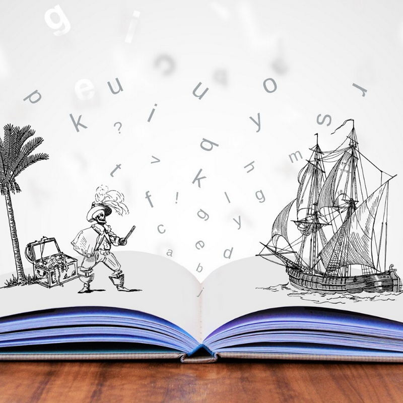

Tus clases de yoga pueden ser una oportunidad de abrir las puertas de la imaginación junto a ellos y ellas. Una manera de guiar una clase, es realizar un viaje a lugares donde podamos explorar y descubrir las potencialidades que nos entrega dicho lugar para cumplir nuestros objetivos en el trabajo con y para la infancia.
Aquí van algunos ejemplos:
Viajaremos a…
Al bosque encantado:
Aquí podemos elegir transformarnos en los distintos árboles que vamos encontrando, escuchar el sonidos de las aves que vuelan sobre el cielo, respirar al escuchar el susurro del viento, imitar a los animales con quienes nos topamos en el camino y mucho más.
Al país de las letras:
Si vamos al país de las letras es una excelente oportunidad para fomentar el proceso lecto-escritor en niños y niñas. Podemos guiar el viaje, haciendo preguntarles, tales como: ¿Cómo viven las letras?, ¿Dónde viven?, ¿Cómo son? y estas respuestas nos permitirán abrir caminos. Podemos hacer con nuestro cuerpo la forma de cada una de las letras encontradas, emitir el sonido de ellas, crear palabras entre todos/as, etc.
A la playa:
Si vamos a la playa, podemos quedarnos sobre el arena sintiendo su temperatura, moviendo nuestro cuerpo como las olas del mar, volar como las gaviotas, tendernos sobre la arena y observar cómo se mueven las nubes, respirar al ritmo del oleaje del mar, etc. Además luego podemos imaginar entrar al agua y descubrir todo lo que hay en las profundidades.
Al mundo de los colores:
¿Cómo se mueve cada color?, ¿Cuál es la postura del color rojo?, ¿Cómo descansa el color morado?, ¿Dónde le gusta estar al color amarillo?.
Al país donde todo es posible:
En este lugar todo es posible, es posible que un perro cante en inglés, es posible que los cangrejos hagan yoga, que las nubes nos den gotas de chocolate, etc.
A la cima de una montaña:
Para llegar a la cima de esta montaña, es necesario prepararse previamente con todos los implementos, tales como: zapatillas cómodas, gorro para el sol, lentes, mochila con botella de agua y más. Estas acciones pueden ser realizadas corporalmente como vía de calentamiento. Luego al subir la montaña, nos vamos encontrando con piedras de todos los tamaños, águilas. Si estamos cansados podemos descansar y respirar profundo sobre una piedra, para luego observar las otras montañas que están cerca.